Curso de Cálculo para Cinemática
Limites, derivadas e integrais com foco em velocidade, MU e MUV
Antes da fórmula, veja a geometria. Antes da conta, localize o movimento no eixo S.
Recorte do curso: este material não tenta ensinar “cálculo inteiro”.
Ele ensina o pedaço do cálculo que mais conversa com a cinemática do ensino médio e do início da engenharia:
posição, velocidade, aceleração, inclinação de gráfico, área sob gráfico e as equações clássicas do MU/MUV.
Como usar este arquivo no VS Code
Este arquivo foi escrito em Markdown com LaTeX.
- Fórmulas inline usam
$...$ - Fórmulas em bloco usam
$$...$$
Para visualizar bem no VS Code, o caminho mais confiável é usar uma extensão de preview com matemática, como:
- Markdown Preview Enhanced, ou
- qualquer preview com KaTeX/MathJax
As figuras estão em ./calc_cinematica_assets/.
Plano de ação do curso
A ideia aqui é construir o cálculo de dentro da cinemática, e não o contrário.
Etapa 1 — Linguagem física antes da matemática
Primeiro vamos fixar o que são:
- posição $x(t)$
- velocidade $v(t)$
- aceleração $a(t)$
e como cada uma aparece nos gráficos.
Etapa 2 — Limite como “aproximação da velocidade instantânea”
Vamos partir da velocidade média e apertar o intervalo de tempo até enxergar a velocidade naquele instante.
Etapa 3 — Derivada como inclinação
Vamos mostrar que:
- derivar a posição dá a velocidade
- derivar a velocidade dá a aceleração
mas apenas com as regras que realmente interessam para MU e MUV.
Etapa 4 — Integral como acúmulo / área
Vamos interpretar:
- área sob o gráfico de $v \times t$ como deslocamento
- área sob o gráfico de $a \times t$ como variação de velocidade
A partir daí, as fórmulas clássicas vão aparecer quase sozinhas.
Etapa 5 — Fechamento em linguagem de engenharia
No final, você vai enxergar as fórmulas não como “coisas para decorar”, mas como traduções geométricas de inclinação e área.
1. A ideia central: cálculo, na cinemática, é sobre duas perguntas
Na cinemática, o cálculo nasce de duas perguntas muito concretas:
Pergunta A — “quão rápido está mudando agora?”
Isso nos leva a derivada.
Exemplo físico:
- a posição do carro muda com o tempo;
- a taxa dessa mudança é a velocidade;
- se a velocidade muda, a taxa dessa mudança é a aceleração.
Pergunta B — “quanto foi acumulado ao longo do tempo?”
Isso nos leva a integral.
Exemplo físico:
- se eu sei a velocidade a cada instante e quero saber quanto o corpo andou, eu acumulo isso ao longo do tempo;
- geometricamente, isso aparece como área sob o gráfico.
Em linguagem curta:
- derivada = taxa de variação
- integral = acúmulo
Essa dupla é o coração da cinemática.
2. As três funções da cinemática
Na engenharia e na física, quase sempre pensamos em três funções do tempo:
onde:
- $x(t)$ é a posição
- $v(t)$ é a velocidade
- $a(t)$ é a aceleração
2.1. Como ler isso fisicamente?
Quando você escreve $x(t)$, está dizendo:
“a posição depende do tempo”.
Quando escreve $v(t)$:
“a velocidade depende do tempo”.
E quando escreve $a(t)$:
“a aceleração depende do tempo”.
Isso permite descrever desde uma esteira industrial em velocidade constante até um carro arrancando no semáforo.
3. MU e MUV vistos pelos gráficos
Antes do cálculo, vale fixar a geometria dos gráficos.
3.1. MU — Movimento Uniforme
No MU, a velocidade é constante.
Então a posição cresce linearmente:
Por enquanto, leia essa expressão como o retrato algébrico do MU. A construção dela virá na seção 9, quando o deslocamento for lido como área sob o gráfico $v \times t$.
Geometria do MU
- no gráfico $x \times t$, aparece uma reta
- no gráfico $v \times t$, aparece uma linha horizontal
- no gráfico $a \times t$, aparece a linha no zero
Gráfico $x \times t$:
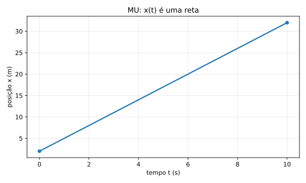
Gráfico $v \times t$:
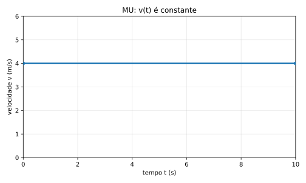
Gráfico $a \times t$:
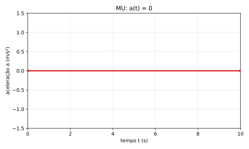
Leitura física da inclinação
A inclinação dessa reta no gráfico $x \times t$ é a velocidade.
- reta mais inclinada $\Rightarrow$ maior velocidade
- reta menos inclinada $\Rightarrow$ menor velocidade
- reta descendo $\Rightarrow$ velocidade negativa
3.2. MUV — Movimento Uniformemente Variado
No MUV, a aceleração é constante.
Logo, a velocidade varia linearmente com o tempo:
E a posição passa a variar quadraticamente:
Aqui ainda estamos apresentando o mapa do movimento, não a demonstração. A forma $v(t)=v_0+at$ será justificada na seção 12.2. A forma $x(t)=x_0+v_0 t+\frac{1}{2}at^2$ será construída na seção 10 e retomada formalmente na seção 12.1.
Geometria do MUV
- no gráfico $a \times t$, temos uma linha horizontal
- no gráfico $v \times t$, temos uma reta
- no gráfico $x \times t$, temos uma curva parabólica
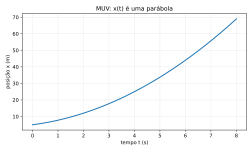
Esse é um ponto importante:
- no MU, posição é reta
- no MUV, posição é curva
Mesmo assim, ainda estamos dentro de um dos movimentos mais simples da física.
4. Velocidade média e velocidade instantânea
Aqui começa o cálculo de verdade.
4.1. Velocidade média
Em um intervalo de tempo $\Delta t$, a velocidade média é:
Aqui aparecem duas abreviações:
- $\Delta x$ = variação de posição
- $\Delta t$ = variação de tempo
Se o intervalo começa no instante $t$ e termina no instante $t+\Delta t$, então:
- posição inicial = $x(t)$
- posição final = $x(t+\Delta t)$
- tempo inicial = $t$
- tempo final = $t+\Delta t$
Usamos agora duas ideias matemáticas bem simples:
- variação = valor final $-$ valor inicial
- a posição é dada por uma função do tempo, escrita como $x(t)$
Logo,
e
Substituindo essas duas escritas na fórmula compacta, obtemos:
Essa forma parece mais carregada, mas não é uma nova fórmula.
É a mesma velocidade média escrita em linguagem de função.
Na seção 4.2, vamos usar exatamente essa escrita para encolher o intervalo e chegar à velocidade instantânea.
Isso responde:
“Em média, quanto a posição mudou por unidade de tempo nesse intervalo?”
Exemplo físico
Imagine um carro entre dois postes de medição:
- em $t = 2,s$, ele está em $x=30,m$
- em $t = 5,s$, ele está em $x=66,m$
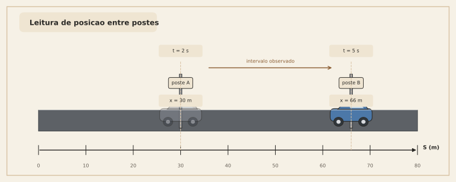
Então:
Isso não significa necessariamente que ele estava a $12\ \text{m/s}$ o tempo todo.
Significa apenas que o efeito médio naquele intervalo foi esse.
4.2. O salto conceitual: e se eu encolher o intervalo?
Agora vem a ideia de limite.
Se eu quiser a velocidade num instante, eu posso pegar um intervalo muito pequeno em torno daquele instante.
Em vez de olhar o comportamento entre tempos bem separados, eu olho assim:
e vou tornando $\Delta t$ cada vez menor:
Quando esse processo funciona, nasce a velocidade instantânea:
Essa é a definição de derivada aplicada à posição.
Em linguagem intuitiva:
a velocidade instantânea é a velocidade média em um intervalo tão pequeno que ele “encosta” num único instante.
4.3. Visão geométrica: secante e tangente
No gráfico $x \times t$:
- a velocidade média é a inclinação da reta secante entre dois pontos
- a velocidade instantânea é a inclinação da reta tangente naquele ponto
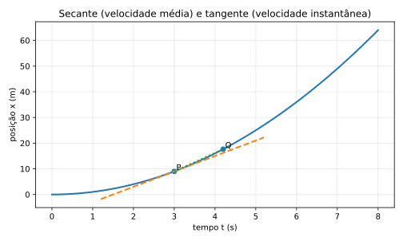
Leitura física
Isso é belíssimo porque une duas linguagens:
- linguagem física: “rapidez de mudança”
- linguagem geométrica: “inclinação da curva”
Na prática:
- inclinação grande $\Rightarrow$ velocidade grande
- inclinação nula $\Rightarrow$ velocidade zero
- inclinação negativa $\Rightarrow$ velocidade negativa
5. Derivada sem exagero: só as regras que importam aqui
Há muitas regras de derivação em cálculo.
Mas, para MU e MUV, você precisa de um conjunto muito pequeno.
5.1. Regra 1 — derivada de constante
Se $c$ é constante,
Exemplo físico:
- $x_0$ é posição inicial, número fixo
- então a taxa de variação de $x_0$ é zero
5.2. Regra 2 — derivada de $t$
Logo, se houver uma constante multiplicando $t$:
Isso é exatamente o que faz a velocidade constante aparecer no MU.
5.3. Regra 3 — derivada de $t^2$
Portanto,
Esse é o pedaço-chave do MUV.
5.4. Regra 4 — derivada da soma
Se
então
Na prática:
6. Aplicando derivada ao MU
No MU:
Aqui a lei horária do MU entra como hipótese de trabalho para enxergarmos o papel da derivada. A origem geométrica dessa expressão será construída na seção 9.
Derivando em relação ao tempo:
Pelas regras acima:
Logo,
ou seja, a velocidade é constante, como esperado.
Interpretação
Isso mostra que a fórmula do MU já carrega, escondida, uma ideia de cálculo:
a inclinação da reta posição-tempo é constante.
7. Aplicando derivada ao MUV
Agora pegue a fórmula:
Aqui a lei horária do MUV também entra primeiro como hipótese de trabalho. A construção geométrica dela aparece na seção 10, e a forma integral mínima aparece na seção 12.1.
Derivando:
Logo:
portanto,
Agora derivamos de novo:
portanto,
Chegamos ao pacote completo:
Esse trio é a cara do MUV.
8. O caminho inverso: integral como acúmulo
Derivada responde:
“qual é a taxa de variação agora?”
Integral responde:
“quanto foi acumulado ao longo do intervalo?”
Na cinemática, a leitura geométrica mais poderosa é:
- área sob o gráfico de $v \times t$ = deslocamento
- área sob o gráfico de $a \times t$ = variação de velocidade
Essa ideia vale em geral.
Mas vamos focar primeiro em MU e MUV.
9. Integral no MU: por que $x = x_0 + vt$?
No MU, a velocidade é constante.
Num intervalo de duração $t$, o gráfico $v \times t$ forma um retângulo.
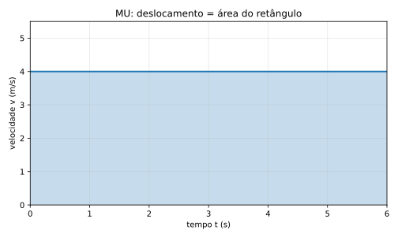
A área é:
Como posição final é posição inicial mais deslocamento:
então:
Pronto: a fórmula do MU apareceu como área de um retângulo.
10. Integral no MUV: por que $x = x_0 + v_0 t + \frac{1}{2}at^2$?
Aqui está uma das partes mais importantes do curso.
No MUV,
Se você quiser a origem dessa reta de velocidade partindo de $a(t)=a$, ela será construída na seção 12.2. Aqui vamos usá-la como entrada geométrica para montar a área sob o gráfico $v \times t$.
No gráfico $v \times t$, isso é uma reta.
A área sob essa reta, de $0$ até $t$, é um trapézio.
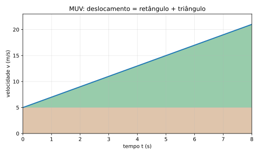
Podemos dividir essa área em duas partes:
Parte 1 — retângulo
Altura $v_0$, base $t$:
Parte 2 — triângulo
A velocidade cresce de $v_0$ até $v_0+at$, então o “extra” é $at$.
Base $t$, altura $at$:
Somando:
Logo,
e portanto:
Essa talvez seja a interpretação geométrica mais bonita do MUV:
o termo $v_0 t$ é a parte “que já vinha andando”
e o termo $\frac{1}{2}at^2$ é o ganho extra vindo da aceleração.
11. A média das velocidades no MUV: por que ela funciona?
Uma dúvida muito comum é:
“Por que no MUV podemos usar $\dfrac{v_0 + v}{2}$?”
A resposta curta é:
porque o gráfico $v \times t$ é uma reta.
Quando a velocidade varia linearmente no tempo, a área do trapézio também pode ser escrita como:
e a velocidade média é a média aritmética dos extremos:
Então:
Se quiser, substituímos $v = v_0 + at$:
e recuperamos a fórmula clássica.
O ponto conceitual importante
No MUV, a média das velocidades das pontas funciona porque a variação é linear.
Se o gráfico de $v(t)$ fosse uma curva arbitrária, essa média simples dos extremos não seria garantidamente a velocidade média real.
12. Integral formal mínima: só o que basta
Se você quiser escrever isso com linguagem de integral, fica assim:
12.1. Deslocamento a partir da velocidade
Esse $\tau$ é só um nome para a variável de integração.
Poderia ser outra letra.
No MUV:
Então:
Usando as regras mais simples de integral:
Logo,
Substituindo os limites:
Portanto:
e de novo:
12.2. Variação de velocidade a partir da aceleração
Da mesma forma:
No MUV, $a(\tau)=a$ constante, então:
Logo:
portanto:
Isso mostra o papel da integral com clareza:
- acumular aceleração ao longo do tempo dá variação de velocidade
- acumular velocidade ao longo do tempo dá deslocamento
13. O Teorema Fundamental do Cálculo, traduzido para a cinemática
Em um curso formal de cálculo, existe um resultado central chamado Teorema Fundamental do Cálculo.
Aqui, em linguagem de cinemática, ele aparece quase assim:
Se eu derivar a posição, obtenho a velocidade
Se eu acumular a velocidade no tempo, recupero deslocamento
Se eu derivar a velocidade, obtenho a aceleração
Se eu acumular a aceleração no tempo, recupero variação de velocidade
Em linguagem bem direta:
derivar “mede a taxa”
integrar “reconstrói o acúmulo”
Na cinemática, essas duas operações são praticamente a tradução matemática de “olhar inclinação” e “olhar área”.
14. Um comentário sobre curvas: só o necessário
Você pediu para trazer curva apenas o suficiente para introduzir integral.
Então aqui vai o recorte certo.
Se $v(t)$ não for reta, mas uma curva qualquer, a regra geral continua válida:
Geometricamente:
- área sob a curva de $v \times t$ = deslocamento
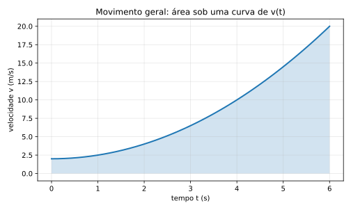
Mas, neste material, o foco principal é:
- MU: $v(t)$ constante
- MUV: $v(t)$ linear
Ou seja, mesmo sem entrar em movimentos complexos, você já ganha o pedaço mais útil do cálculo para a cinemática básica.
15. Da geometria às fórmulas clássicas do ensino médio
Agora vamos reorganizar tudo em forma de “caixa de ferramentas”.
15.1. MU
Equação horária da posição
Leitura em cálculo
- derivada de $x(t)$ dá $v$
- área sob $v(t)$ dá deslocamento
15.2. MUV
Equação horária da velocidade
Equação horária da posição
Velocidade média no MUV
Deslocamento via velocidade média
16. Bônus útil: Torricelli via cálculo mínimo
Essa parte é opcional, mas muito boa para engenharia porque elimina o tempo.
Queremos chegar em:
Começamos de:
Mas também sabemos que:
Então podemos escrever:
Como $\dfrac{dx}{dt}=v$, fica:
Reorganizando:
Se a aceleração for constante, integramos os dois lados:
Calculando:
Logo:
Multiplicando por $2$:
Portanto:
Essa derivação é muito valiosa porque mostra que Torricelli não é uma fórmula solta. Ela cai de um pedaço curto de cálculo com grande significado físico.
17. Exemplos físicos completos
Agora vamos usar tudo em cenários reais.
Exemplo 1 — Esteira industrial em velocidade constante (MU)
Uma caixa entra numa esteira na posição inicial $x_0 = 1{,}2\ \text{m}$ e segue com velocidade constante de $0{,}8\ \text{m/s}$ por $15\ \text{s}$.
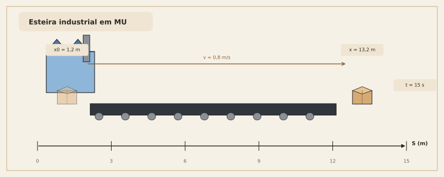
Pergunta
Qual a posição da caixa após $15\ \text{s}$?
Solução
No MU:
Substituindo:
Leitura geométrica
No gráfico $v \times t$, isso é um retângulo com:
- base $15$
- altura $0{,}8$
Área:
Esse é o deslocamento.
Depois somamos com a posição inicial.
Exemplo 2 — Carro saindo do semáforo (MUV)
Um carro passa pelo semáforo com velocidade inicial $v_0 = 4\ \text{m/s}$ e aceleração constante $a = 2{,}5\ \text{m/s}^2$.
Determine a velocidade e o deslocamento após $6\ \text{s}$.
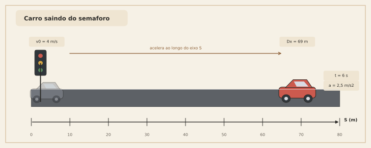
Velocidade após 6 s
Usamos:
Deslocamento após 6 s
Usamos:
Interpretação física
Dos $69\ \text{m}$:
- $24\ \text{m}$ vêm do pedaço “velocidade inicial mantida”
- $45\ \text{m}$ vêm do ganho extra causado pela aceleração
Essa separação ajuda muito a enxergar o significado da fórmula.
Exemplo 3 — Empilhadeira freando (MUV com aceleração negativa)
Uma empilhadeira se move com velocidade inicial $v_0 = 6\ \text{m/s}$ e freia com aceleração constante $a = -1{,}5\ \text{m/s}^2$.
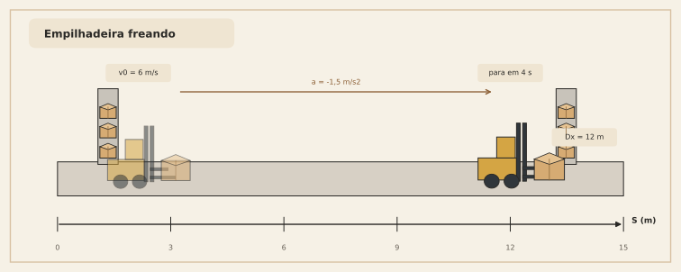
Pergunta A
Quanto tempo leva para parar?
Usamos:
No instante em que para, $v=0$:
Pergunta B
Qual a distância percorrida até parar?
Interpretação
A aceleração negativa não “quebra” a fórmula.
Ela apenas faz o termo quadrático atuar reduzindo o crescimento da posição.
Exemplo 4 — Torricelli em frenagem
Um veículo está a $24\ \text{m/s}$ e freia com aceleração constante de $-4\ \text{m/s}^2$.
Qual a distância mínima de frenagem até parar?
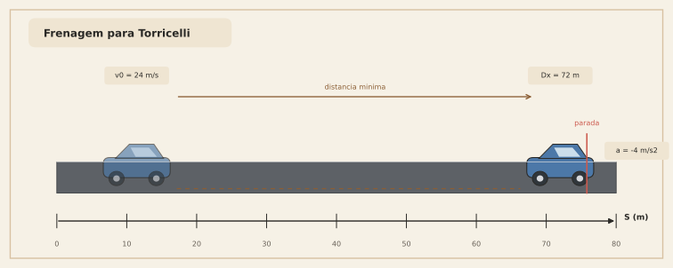
Usamos Torricelli:
Quando o veículo para, $v=0$:
Checagem cruzada
Também poderíamos fazer pelo tempo:
Depois:
As duas rotas batem, como devem bater.
18. O papel dos gráficos em linguagem de engenharia
Na prática, em engenharia, olhar gráfico não é “enfeite”.
É uma maneira de validar a equação sem decorar.
18.1. Gráfico $x \times t$
Pergunta respondida:
“onde o corpo está?”
Leituras importantes:
- valor do gráfico = posição
- inclinação = velocidade
18.2. Gráfico $v \times t$
Pergunta respondida:
“a que velocidade o corpo está se movendo?”
Leituras importantes:
- valor do gráfico = velocidade
- inclinação = aceleração
- área sob o gráfico = deslocamento
18.3. Gráfico $a \times t$
Pergunta respondida:
“como a velocidade está mudando?”
Leituras importantes:
- valor do gráfico = aceleração
- área sob o gráfico = variação de velocidade
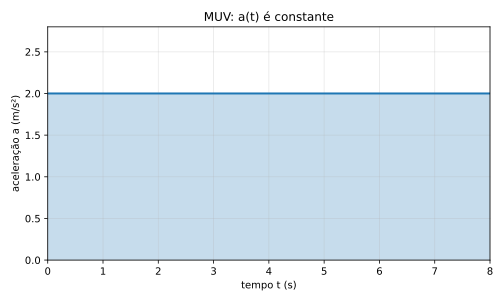
19. Uma sequência mental que funciona muito bem em problemas
Quando você pegar um exercício, use esta ordem:
Passo 1 — descubra qual grandeza você conhece como função do tempo
Você recebeu:
- posição?
- velocidade?
- aceleração?
Passo 2 — veja se o movimento é MU ou MUV
- velocidade constante $\Rightarrow$ MU
- aceleração constante $\Rightarrow$ MUV
Passo 3 — pense em gráfico
Antes da fórmula, pergunte:
- isso é reta?
- isso é área?
- isso é inclinação?
Passo 4 — só então escreva a equação
Use a equação como tradução do raciocínio geométrico, não como chute decorado.
20. Erros clássicos e como evitá-los
Erro 1 — confundir velocidade média com velocidade instantânea
Correção:
- média usa intervalo
- instantânea usa limite / tangente
Erro 2 — usar $\dfrac{v_0 + v}{2}$ fora do MUV
Correção:
- essa média simples vale quando $v(t)$ é linear no tempo
Erro 3 — esquecer a interpretação de área
Correção:
- em $v \times t$, área = deslocamento
- em $a \times t$, área = variação de velocidade
Erro 4 — tratar aceleração negativa como “fórmula diferente”
Correção:
- a fórmula é a mesma
- o sinal da aceleração cuida do sentido físico
Erro 5 — decorar sem ler unidade
Correção:
- sempre cheque unidade:
- $v_0 t$ tem unidade de comprimento
- $at^2$ também tem unidade de comprimento
- logo ambos podem ser somados em $x(t)$
Checagem dimensional rápida
Tudo consistente.
21. Mini-resumo das regras de cálculo que realmente usamos aqui
Derivadas
Integrais
Tradução para a cinemática
Dito isso, é possível usar várias outras regras práticas de cálculo.
Mas, na cinemática básica, especialmente em velocidade, MU e MUV, esse conjunto já leva você às fórmulas clássicas do ensino médio sem sofrimento desnecessário.
22. Folha de consulta compacta
MU
- gráfico $x \times t$: reta
- gráfico $v \times t$: horizontal
- área em $v \times t$: deslocamento
MUV
- gráfico $a \times t$: horizontal
- gráfico $v \times t$: reta
- gráfico $x \times t$: parábola
Relações de cálculo
23. Exercícios propostos
Exercício 1 — MU
Um carrinho de inspeção se move com velocidade constante de $3{,}5\ \text{m/s}$ a partir de $x_0 = 2\ \text{m}$.
Qual sua posição após $12\ \text{s}$?
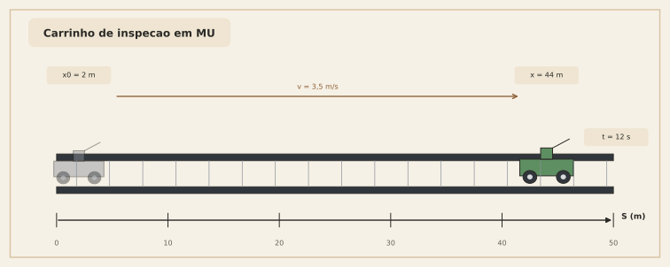
Exercício 2 — MUV acelerado
Uma moto parte com $v_0 = 2\ \text{m/s}$ e aceleração constante de $3\ \text{m/s}^2$.
Determine:
- a velocidade após $5\ \text{s}$
- o deslocamento nesse intervalo
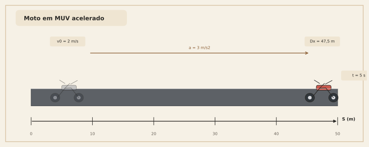
Exercício 3 — MUV retardado
Um robô de armazém está a $8\ \text{m/s}$ e freia com $a=-2\ \text{m/s}^2$.
Determine:
- o tempo para parar
- a distância percorrida até parar
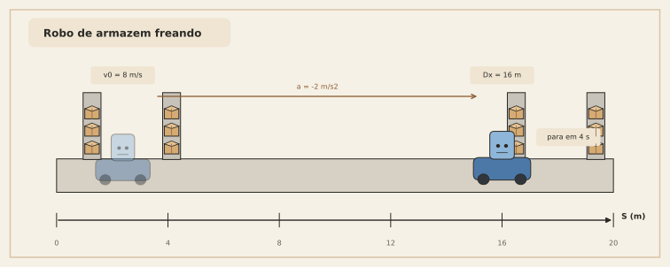
Exercício 4 — leitura geométrica
Explique, sem usar conta, por que o termo $\dfrac{1}{2}at^2$ aparece no MUV a partir do gráfico $v \times t$.
24. Gabarito dos exercícios
Exercício 1
Exercício 2
Velocidade
Deslocamento
Exercício 3
Tempo para parar
Distância
Exercício 4
Porque o gráfico $v \times t$ no MUV é uma reta;
a área sob a reta pode ser decomposta em:
- um retângulo $v_0 t$
- um triângulo de área $\dfrac{1}{2}t\cdot at$
Logo o deslocamento total é:
25. Fechamento
Se você guardar apenas uma visão deste material, guarde esta:
Derivada é inclinação
- da posição sai a velocidade
- da velocidade sai a aceleração
Integral é área / acúmulo
- da velocidade sai o deslocamento
- da aceleração sai a variação de velocidade
E, mais importante ainda:
as fórmulas do MU e do MUV não são mágicas nem arbitrárias
elas são a forma algébrica de duas ideias geométricas: inclinação e área
Esse é o ponto em que cálculo deixa de parecer “matemática abstrata solta” e passa a parecer o que ele realmente é na cinemática:
uma linguagem para medir mudança e acúmulo no mundo físico.